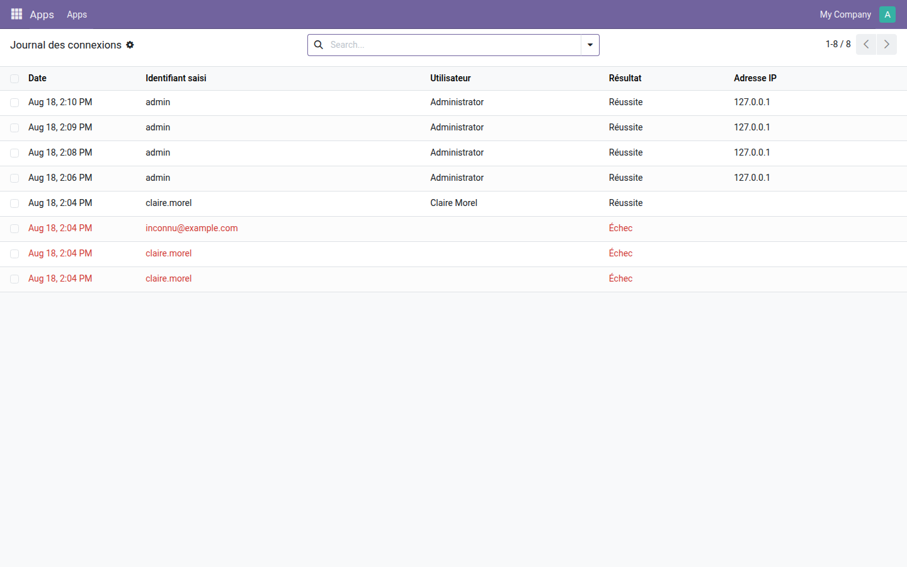

Journal des connexions
Chaque connexion et chaque échec, avec son identifiant, son adresse IP et sa date.
Odoo retient la date de dernière connexion, et rien d'autre. Les tentatives échouées partent dans le fichier de journal du serveur — que personne n'ouvre, qui demande un accès système, et qui disparaît à la rotation. Une rafale de tentatives sur un compte d'administrateur peut ainsi passer inaperçue jusqu'à ce qu'elle aboutisse.
Ce que ça apporte
- 🔐 Réussites et échecs — les deux, dans le même registre, consultable depuis l'interface.
- 🌐 L'adresse d'où l'on entre — visible sur chaque ligne, et regroupable.
- ❓ Même les identifiants inconnus — une tentative sur un compte inexistant est inscrite avec l'identifiant saisi, sans utilisateur rattaché.
- 💾 Les échecs ne se perdent pas — ils sont écrits sur une transaction qui leur est propre. Une trace posée dans la transaction de la connexion refusée disparaîtrait avec elle.
- 🚪 Jamais au prix d'une connexion — si le registre tombe en panne, l'incident part dans le journal du serveur et l'authentification suit son cours.
Aperçus réels
1. Une rafale d'échecs se voit d'un coup d'œil
Trois tentatives refusées en rouge — dont une sur un identifiant qui n'existe pas — puis la connexion qui aboutit. Les lignes du haut sont les connexions réelles de l'administrateur depuis son navigateur, adresse IP à l'appui.

Pourquoi l'adopter
- Le registre est réservé aux administrateurs : il contient les identifiants saisis, qui sont parfois des mots de passe tapés dans le mauvais champ.
- Aucune configuration : le module enregistre dès son installation.
- Module gratuit, licence LGPL-3 — aucun abonnement, aucune dépendance extérieure.
Pour aller plus loin
Savoir qui entre est un début ; décider ce que chacun voit une fois entré en est la suite. la gamme OdooSkills compte une quinzaine de modules de cloisonnement — par équipe commerciale, par département, par projet, par journal comptable, par entrepôt. Catalogue complet : apps.odooskills.com.
Licence LGPL-3 — compatible Odoo 19.0 Community et Enterprise. Support : support@odooskills.com.